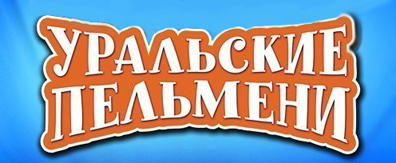

Описание
«Ура́льские пельме́ни» — российское творческое объединение из Екатеринбурга,
работающее в комедийном жанре. Организовано в 1993 году как команда КВН.
Одна из самых популярных команд КВН, чемпионы Высшей лиги КВН 2000 года. С 2009 года «Уральские пельмени»
представляют собственное одноимённое юмористическое шоу на телеканале СТС, а также ряд других юмористических проектов.
Актёрский костяк коллектива сложился ещё в 1990-х годах в бытность коллектива командой КВН; в пост-КВНовской
творческой деятельности был приглашён ещё ряд актёров и актрис. Актёры команды являются и авторами номеров;
в то же время есть и другие группы сценаристов, которые трудятся над различными проектами «Уральских пельменей».
Хронология
-
1993 — основание команды «Уральские пельмени».
- 1995 — дебют в Высшей лиге КВН.
- 1999 — второй призёр музыкального фестиваля
«Голосящий КиВиН» в Юрмале («Большой КиВиН в светлом»).
- 2000 — чемпион Высшей лиги КВН.
- 2002 — победитель музыкального фестиваля
«Голосящий КиВиН» в Юрмале
(«Большой КиВиН в золотом»).
- 2002 — победитель
«Кубка суперчемпионов КВН» в игре
с командой БГУ в Ханты-Мансийске.
- 2004 — серебряный призёр музыкального фестиваля
«Голосящий КиВиН» в Юрмале («Большой КиВиН в светлом»).
- 2005 — бронзовый призёр музыкального
фестиваля «Голосящий КиВиН» в Юрмале («Большой КиВиН в тёмном»).
- 2005 — победитель Зимнего кубка Высшей украинской лиги.
- 2006 — бронзовый призёр музыкального
фестиваля «Голосящий КиВиН» в Юрмале
(«Большой КиВиН в тёмном»).
- 2007, 2009 — программа «Шоу Ньюs» на «ТНТ».
- 2009 — 16-летний «юбилей» команды под
названием «Уральские пельмени. 16 лет.
Юбилей» («Потому что гладиолус!») на канале «РЕН ТВ».
- 2009 — настоящее время — юмористические
спектакли «Шоу „Уральских пельменей“» на канале «СТС».
- 2011—2013 — скетчкомы «Нереальная история»
и «Валера TV» на «СТС».
- 2012 — шоу талантов «МясорУПка» на канале «СТС».
- 2013 — 20-й «юбилей» команды под названием
«20 лет в тесте» (8 ноября 2013 г. — концерт в Москве).
- 2013 — команда
получила престижную международную теленаграду «ТЭФИ-Содружество».
- 2014 — финалист национальной телевизионной премии
за высшие достижения в области телевизионных искусств — ТЭФИ 2014.
- 2017 — кинокомедия «Везучий случай».
- 2017—2018 — концертное шоу
«Весёлый вечер» на канале «Россия-1»
- 2019 — Встреча выпускников КВН.
- 2020 — Интернет-проекты «Дома
с пельменями» и «Рассмеши пельменя».
- 2021 — Юбилейный выпуск КВН 60 лет. Сборная ТОТ КВН.